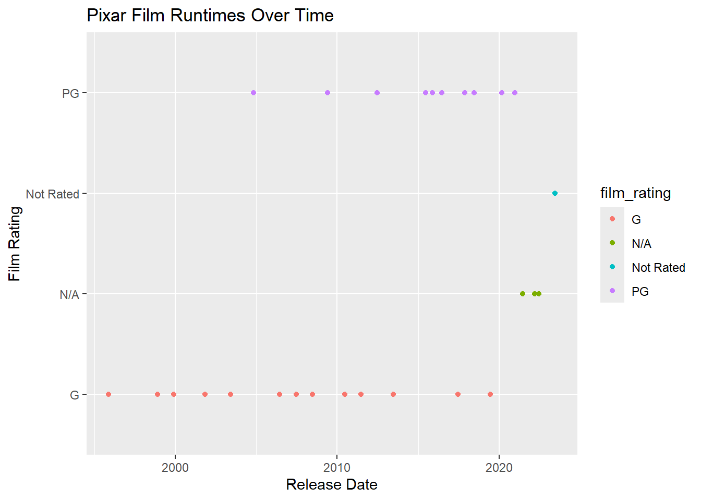

The goal here is to explore the Pixar Films data from TidyTuesday and see if I can find anything of interest.
##install.packages("pixarfilms")library("pixarfilms")
library(tidyr)
library(dplyr)##
## Attaching package: 'dplyr'## The following objects are masked from 'package:stats':
##
## filter, lag## The following objects are masked from 'package:base':
##
## intersect, setdiff, setequal, unionpixar <- pixar_filmsmean(pixar$run_time, na.rm = TRUE)## [1] 104.84The average runtime for a Pixar film is around 105 minutes - how has that changed over time?
library(ggplot2)pixar %>%
ggplot(aes(x = release_date, y = run_time)) +
geom_line() +
geom_point() +
labs(title = "Pixar Film Runtimes Over Time", x = "Year", y = "Run Time ")## Warning: Removed 2 rows containing missing values or values outside the scale range
## (`geom_point()`).It appears that there was a large spike shortly after 2021 - I am curious to know which movie had such a long run time.
ggplot(pixar, aes(x = reorder(film, run_time), y = run_time)) +
geom_col() +
coord_flip() +
labs(title = "Pixar Film Runtimes", x = "Film", y = "Run Time")## Warning: Removed 2 rows containing missing values or values outside the scale range
## (`geom_col()`).pixar[which.max(pixar$run_time), ]## # A tibble: 1 × 5
## number film release_date run_time film_rating
## <chr> <chr> <date> <dbl> <chr>
## 1 27 <NA> 2023-06-16 155 Not Ratedpixar[which.min(pixar$run_time), ]## # A tibble: 1 × 5
## number film release_date run_time film_rating
## <chr> <chr> <date> <dbl> <chr>
## 1 1 Toy Story 1995-11-22 81 GApparently Luca has an extremely long run time, compared to the other Pixar films… perhaps I have to watch it now…
Toy Story has the shortest run time - remains superior though…
Let’s see how run time varies by rating
pixar %>%
group_by(film_rating) %>%
summarise(mean_runtime = mean(run_time), count = n())## # A tibble: 4 × 3
## film_rating mean_runtime count
## <chr> <dbl> <int>
## 1 G 100. 13
## 2 N/A NA 3
## 3 Not Rated 155 1
## 4 PG 101. 10The majority of the movies are G rated and have an average run time of around 100 mins followed by PG rated moves with a similar run time (avg of 101). Not extremely surprised by these results. Let’s plot this …
pixar %>%
ggplot(aes(x = film_rating, fill = film_rating)) +
geom_bar() +
labs(title = "Distribution of Film Ratings", x = "Rating", y = "Count")I am curious to know if ratings have become “less restrictive” or rather if more movies have been made recently that have more “severe” ratings
pixar %>%
ggplot(aes(x = release_date, y = film_rating, color = film_rating)) +
geom_point() +
labs(title = "Pixar Film Runtimes Over Time", x = "Release Date", y = "Film Rating")
Not particularly informative, but it does look like most early films were G rated where as around 2005 it looks like PG movies were introduced.
library(lubridate)##
## Attaching package: 'lubridate'## The following objects are masked from 'package:base':
##
## date, intersect, setdiff, unionpixarnew <- pixar %>%
mutate(years_since_release = year(Sys.Date()) - year(release_date))pixarnew %>%
group_by(film_rating) %>%
summarise(mean_years_old = mean(years_since_release, na.rm = TRUE))## # A tibble: 4 × 2
## film_rating mean_years_old
## <chr> <dbl>
## 1 G 18.3
## 2 N/A 3.33
## 3 Not Rated 2
## 4 PG 10.4The G rated films on average tend to be older than the PG rated films.
Let’s see if films are getting shorter or longer…
ggplot(pixarnew, aes(x = years_since_release, y = run_time)) +
geom_point() +
geom_smooth(method = "lm", se = FALSE) +
labs(title = "Do Pixar Films Get Longer Over Time?", y = "RunTime", x = "Years Since Release")## `geom_smooth()` using formula = 'y ~ x'## Warning: Removed 2 rows containing non-finite outside the scale range
## (`stat_smooth()`).## Warning: Removed 2 rows containing missing values or values outside the scale range
## (`geom_point()`).It looks like no - Pixar films have not gotten longer over time, rather more recent movies appear to be longer, but I am curious to see this without the two “outliers”
pixarfilter <- pixarnew %>%
filter(run_time < 130)ggplot(pixarfilter, aes(x = years_since_release, y = run_time)) +
geom_point() +
geom_smooth(method = "lm", se = FALSE) +
labs(title = "Do Pixar Films Get Longer Over Time?", y = "RunTime", x = "Years Since Release")## `geom_smooth()` using formula = 'y ~ x'Still appears to be a negative relationship!
Overall, I think this was a fun little experiment. However, I was hoping that there was going to be more to the data like info about characters(male/female/other? animal/human? princess? etc.), themes of plots, viewer ratings, directors, or funding. Nevertheless, explored the data and made some cool graphs!